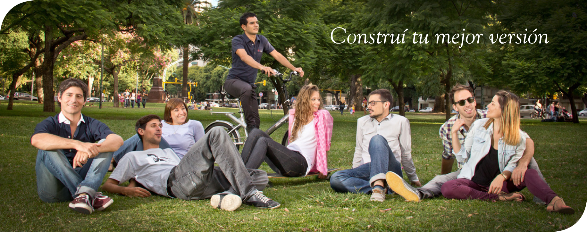

Método DeRose lanza en Argentina la campaña "Construí tu mejor versión"
Método DeRose lanzó su campaña "Construí tu mejor versión" dando así un paso más en la consolidación de su liderazgo como referente en alta performance y calidad de vida.
Con más de 100 sedes en todo el mundo, presencia en 10 países y 50 años de experiencia, Método DeRose lanzó una serie de acciones destinadas a difundir su trabajo y a compartir los conceptos de marca como parte de su programa de comunicación y como inicio de una serie de acciones previstas en su plan regional de crecimiento para 2013.
En Argentina la organización cuenta con 11 sedes y 65 instructores activos distribuidos en Buenos Aires, Córdoba y Mendoza. Constituye de esta manera el centro de alta performance y calidad de vida más grande del país.

El lanzamiento oficial de las acciones fue realizado en el Teatro Garrik de la ciudad de Buenos Aires. Encabezado por Edgardo Caramella, Presidente de la Federación de Método DeRose Argentina, contó también con la presencia de los máximos exponentes de la organización Argentina, emprendedores del Método DeRose, alumnos y clientes.
Durante el lanzamiento se pudo ver el trailer oficial de la marca "Inspirá tu Esencia" y la presentación exclusiva de las obras Shaktí y Nexus de DeRose ArtCompany, que estarán en cartelera en el mismo teatro hasta finales de mayo.

Demostradores del Método DeRose interpretan la obra Nexus, de DeRose Art Company.
Método DeRose es el primer centro en el mundo dedicado a desarrollar alta performance integral a través de técnicas y conceptos que ayudan a potenciar la máximo las actividades cotidianas brindando la energía, enfoque y concentración necesarios para el desarrollo personal.
Véalo completo haciendo click sobre la imágen.